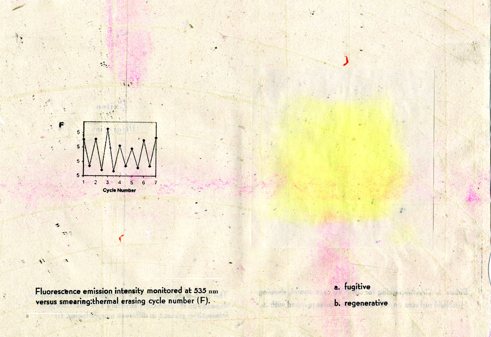
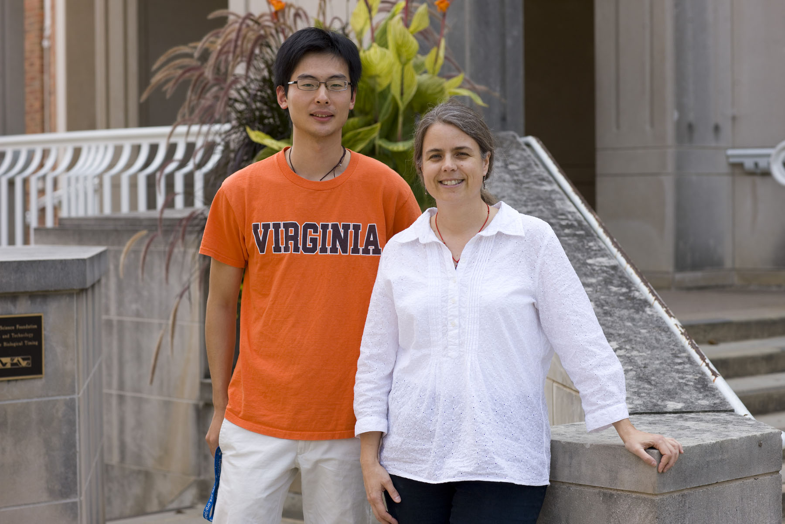

Light Touch Premiers in TechnoSonics XII in the Rotunda
Light Touch Computer Music Video (World Premiere). Music by Judith Shatin; Visuals by Lydia Moyer, based on work of chemist Cassandra Fraser, TechnoSonics XII, Rotunda Dome Room, Charlottesville, Virginia, 9/23/11, 8:00 p.m. Fraser selected materials and tools commonly used in the lab to generate mechanoresponsive surfaces. With Shatin, these were used as "instruments" to generate sounds that were recorded in Shatin's studio. Shatin used these to compose sound art for this work. Moyer visited the Fraser lab and recorded Fraser demonstrating "light bridge" effects whereby a dye that is normally dark in the solid state lights up in the presence of a boron dye. Rebecca Babski and Alan Chien, undergraduates in the Fraser Lab conducted preliminary experiments that informed this work. Light Touch is a creative record and response to our visual and sound experiments.
Posted: 9/24/11
Mechanochromic Dyes Featured in Optics and Photonics News
A talk by Prof. Fraser at the Nanotech2011 conference in Boston inspired the article "Exploring Mechanochromatic Dyes" by Yvonne Carts-Powell for Optics and Photonics News. Recent advances are highlighted. Another image from the Architecture School Exhibit Spring 2010 makes the press.

Posted: 7/5/11
Scratch the Surface InkTM Makes the Cover of Special Mechanoresponsive Materials Issue
We were invited to submit images of force responsive boron dyes for the cover of the special Mechanoresponsive Materials issue of the Journal of Materials Chemistry. An image from our Chromogenic Materials exhibit in the Architecture School with Rosana Rubio Hernandez was selected. Three articles from our group appear in this special issue, including a hot article by Tiandong Liu (see news below), a study with MIT collaborators Ned Thomas, Jon Singer and Steve Kooi, and first papers by Nguyen Nguyen, a first year graduate student in our lab, and Alan Chien and Arianna Sherman, undergraduate and high school coauthors. Congratulations everyone! (high resolution image)

Posted: 6/20/11
Fraser Research Team Travels to Hong Kong to Build Ties to Scientists at HKUST
Tiandong Liu, Alan Chien and Professor Fraser received a travel grant from the University to participate in the trilateral program between UVA, Hong Kong University of Science and Technology and Peking University. On this exploratory trip we all gave research presentations, engaged in scientific exchange, met with professors and students in the Chemistry Department, and collaborated with Prof. Michael Loy and graduate student Wenhao Guo in Physics. For our Chemistry visit at HKUST we were hosted by Prof. Ben Zhong Tang and his group. We also had the opportunity to visit Hong Kong University, hosted by Prof. Vivian Yam. Both of our hosts also work in the luminescent materials field and are members of the prestigious Chinese Academy of Sciences. New ties were established with scientists at both institutions. We thank Dean Woo for the special opportunity for students to partcipate in this exploratory visit too, to represent and serve the university in this way.
Posted: 6/20/11
Graduate Students Tiandong Liu and Nguyen Nguyen Win Huskey Research Exhibition Recognition
Members of the Fraser Lab presented their research at the 2011 Huskey Research Exhibition. Tiandong Liu, won top honors in the Physical Sciences and Mathematics Poster competition for his poster entitled "Difluoroboron beta-diketonate triplet emission via charge-transfer state modulation " and Nguyen Nguyen, a first year graduate student, picked up third place for his poster entitled "Alkyl chain length effects on solid-state difluoroboron β-diketonate mechanochromic luminescence." Liu also garnered a Huskey Travel award to present his results at the upcoming ACS meeting in Denver. Congratulations Liu and Nguyen!
Posted: 5/4/11. Updated: 6/20/11.
State Prizes for High School Science Students and their Smart Bandage Concept
Emily and Charlotte Keeley, tenth grade twins at Charlottesville High School enjoy continued success at the Virginia State Science and Engineering Fair. (See 3/19/11 news post below.) Their high school science fair project, entitled "Creating a Smart Bandage: A Nanoparticle Embedded Polymer to Detect Local Oxygen Levels in Wounds" won First Place in Engineering: Materials & Bioengineering, the Innovative Engineering Award Sponsored by: The National Society of Professional Engineers & Professional Engineers in Industry, and First Place Outstanding Biotechnology Project, Sponsored by: Virginia Biotechnology Association. Additionally, they are invited to participate in the NextTech High School Grand Challenges Competition in Houston this month. These new state honors add to the seven prizes at the local Piedmont Regional Science Fair: First Place Engineering – Materials & Bioengineering; Most Outstanding Exhibit in Materials Engineering, Sponsored by: ASM Material Education Foundation; Battelle Innovation Award, Sponsored by: Battelle Memorial Institute, Recognition Award, Sponsored by: I-SWEEEP; SPE Innovative Engineering Award, Sponsored by: National Society of Professional Engineers; Naval Science Award, Sponsored by: Office of Naval Research; Outstanding exhibit in Materials Science, Sponsored by: Virginia Dental Association; Second Alternate Grand Award Best of Show). Congratulations Emily and Charlotte and all the best in Houston!
A UVA School of Engineering news article about the girls may be found here.
Posted: 5/4/11. Updated: 8/4/11.
Fraser Lab Featured in the Oculus
Ruffin Evans and Professor Fraser were interviewed and featured in "Around the University: Mentors and their Students" published in The Oculus, The Virginia Journal of Undergraduate Research (Fall 2010 issue). Thank you Upasana Bhattacharya and Mitchell Leibowitz, Oculus writers and editors, for showcasing our lab and inviting us share our approach in this way.
Posted: 3/27/11
Arene Mechanochromic Luminescence Paper Selected as Hot Article
The Journal of Materials Chemistry has selected "Arene effects on beta-diketonate mechanochromic luminescence" as a hot article, featured on their blog. This invited submission is part of a special journal issue on mechanoresponsive materials. Congratulations Liu and other coauthors, Alan, Guoqing, and Jiwei!

Posted: 3/19/11
Oxygen Sensing Smart Bandage High School Science Fair Project Wins Top Prizes
A collaborative project between Prof. Shayn Peirce-Cottler's lab in Biomedical Engineering and the Fraser Lab in oxygen sensing wound diagnostics served as inspiration for Emily and Charlotte Keeley, tenth grade twins at Charlottesville High School, for their high school science fair project, entitled "Creating a Smart Bandage: A Nanoparticle Embedded Polymer to Detect Local Oxygen Levels in Wounds." They won seven prizes at the Virginia Piedmont Regional Science Fair held at John Paul Jones Arena, including first place in Materials and Bioengineering category, several other engineering awards, and the Grand Award for Best Innovation including a $500 award from the fair sponsor. They were even featured on TV! See: Charlottesville Sisters Stand Out at Science Fair on CBS19. Graduate students Scott Seaman (Peirce-Cottler Lab, BME) in collaboration with Alex Zestos and Nguyen Nguyen (Fraser Lab) played key mentoring roles. Congratulations Emily and Charlotte!
Posted: 3/19/11
Fraser Delivers First Annual Raymond F. Bratton Lecture at PVCC
Professor Fraser delivered the First Annual Raymond F. Bratton lecture at Piedmont Virginia Community College on Monday October 25, talking about Fraser Lab research "Light Emitting Materials for Imaging and Sensing" and larger issues relating to plastics in the environment and plastic chemicals in the body. Steven Latimer, the Mathematics Examiner, covered the story for the Examiner.
About Professor Bratton and the Bratton Lectureship: Professor Bratton jointed the PVCC faculty when it was founded in 1972, and was a dedicated professor in the Chemistry Department until his retirement. He is one of two faculty members at PVCC to win the prestigious statewide SCHEV teaching award. To honor Prof. Bratton's memory, colleagues, family and friends established this special lectureship that features "a scientist who has not only accomplished important work in her or his field, but who also has the gift of making science compelling and irresistible to an audience of both scientists and non-scientists." One of his colleagues, Professor Emeritus, Pryor Hale, notes: "The late Professor Ray Bratton was a remarkable and gifted teacher and mentor for thousands of students, many of whom came to the University of Virginia, some in chemistry. One such student has honored him by endowing the new chemistry laboratory in his memory in the just-dedicated Kluge-Moses Science Building - a wonderful tribute. Dr. Bratton taught pre-medical students, as well as giving his time to bringing elementary students into his lab to show them that in his words "Everything is chemistry." It was his particular passion to engage students who traditionally did not feel immediately at home in a chem lab - especially women and minority students."
Posted: 10/30/10
OLIO
Guoqing and Prof. Fraser participated in OLIO 8 at the Charlottesville Community Design Center (CCDC), highlighting luminescent nanosensors and force responsive pigments. "Olio is an open forum for the presentation of creative pursuits. Each speaker has 20 slides and 20 seconds per slide to present their work. The event seeks to spark new collaborations, conceptions, and relationships in the Charlottesville art and design community. Olio is on Facebook....It aims to capture the spirit of the old salons: to please and educate."
Olio: [oh-lee-oh]
–noun,
1. a dish of many ingredients.
2. a mixture of heterogeneous elements; hodgepodge.
3. a medley or potpourri, as of musical or literary selections; miscellany.
4. In theater, a program of variety acts.
Posted: 6/26/10
Reunions Weekend Art/Science Seminar
With Vice Provost for the Arts Beth Turner who spoke about the Calder Exhibit, and Studio Art Professor Dean Dass who presented the Fallow City Project, Cassandra Fraser participated in the "Are Scientists from Venus and Artists from Mars" panel in Fayerweather Hall with alumni in a Reunions weekend seminar. For more information, including images, text and video links from the talk and exhibit, see Chromogenic Materials > Scratch the Surface Ink Explorations and other news below.
Posted: 6/5/10
Let There Be Light
Chemists Discover Light Emitting Compound. The latest news from the Fraser lab, complete with article and video, courtesy of The University of Virginia Magazine. Here's a chance to see Scratch the Surface InkTM in action! Other videos showing scratching and fugitive effects on chemistry weighing paper may be found here and here on YouTube.
Posted: 5/7/10
Guoqing Zhang Wins Gwathmey Memorial Award for Best Paper
Guoqing was recognized for the following high impact publication: Zhang, G.; Palmer, G. M.; Dewhirst, M. W.; Fraser, C. L. “Dual Emissive Materials Design Concept Enables Tumor Hypoxia Imaging” Nat. Mater. 2009, 8, 747–751. Congratulations Guoqing!
About the award, excerpted from the program announcement and a previous news article:
Allen T. Gwathmey was a prominent surface scientist and professor of chemistry at U.Va. from 1947-1963. The Gwathmey Memorial Award was initiated in his honor by friends and colleagues. The Allen T. Gwathmey Memorial Award (a $5000 cash prize) is given for the best paper written on “a fundamental problem in the physical sciences.” Graduate students in Chemistry, Physics or Materials Science as well as other fields of the physical sciences are encouraged to apply. The paper should be an original and significant contribution, largely due to work of the nominee, and should provide evidence of future potential in scientific research.*
Posted: 5/5/10
Chromogenic Materials Agents of Architecture Exhibit Features Scratch the Surface InkTM

Selected images, video, and text from the exhibit may be found here and here: Through Glass Paradoxes (Rosana Rubio-Hernandez' blog)
Exhibit Poster:

Posted: 4/24/10. Updated: 5/7/10.
Alan Chien Named a Beckman Scholar
Alan Chien was selected as one of two inaugural Beckman Scholars in this prestigious new program at UVA. Congratulations Alan! His research plan, academic credentials, and strong performance in an interview with the Beckman Steering Committee made all the difference. Alan will study luminescent boron dyes for incorporation into biomaterials for oxygen and possibly pH sensing, and for their mechanochromic properties sometimes present in these materials as molecular solids. Alan's project will advance fundamental scientific knowledge and contribute to the development of oxygen and mechanical sensors. The special Beckman Scholars program encourages undergraduate research with a generous award of $20,000 to the recipient. (SEAS article)
Posted: 4/14/10
Ruffin Evans Awarded a Goldwater Scholarship
The Goldwater Scholarship recognizes top science, mathematics and engineering undergraduates intending to pursue a career in these fields. Ruffin was selected as a State of Virginia awardee to receive this $7500 award. Ruffin, a third year chemistry and physics double major from the College was selected along with three other UVA nominees from the Engineering School. It was a great year for UVA! Congratulations Ruffin and other UVA Scholars. (Cavalier Daily article)
Posted: 4/14/10
Songpan Xu Wins Top Honors in Huskey Graduate Research Exhibition
Several members of the Fraser Lab presented posters and participated in the Graduate School of Arts and Sciences Huskey Graduate Research Exhibition. First year graduate student Songpan Xu presented a poster entitled "Light Emitting Boron Dye to Probe Lactide Ring-Opening Polymerization" on work with coauthors Zhang, Zestos, Evans and Fraser. He was awarded highest honors in the Physical Sciences and Mathematics Poster Competition.
Posted: 4/14/10
Guoqing Zhang Receives Chinese Government Award for Outstanding Students Abroad
This highly competitive award recognizes Chinese graduate students across all fields who have achieved excellence in their graduate work abroad. Guoqing was the only student from the Graduate School of Arts and Sciences at UVA to receive this high honor. It comes with a $5000 cash prize. See Guoqing at the Chinese Embassy in Washington, DC on CCTV (a major network in China!).
Posted: 4/14/10
Guoqing Zhang Honored with ACS Inorganic Chemistry Young Investigator Award
In recognition of his achievements and contributions to Inorganic Chemistry, Guoqing was selected as a recipient of this special award. He will give a 30 minute presentation at the Young Investigator Award symposium at the ACS Meeting in Boston in August 2010 and be presented with a $1000 honorarium and a plaque commemorating his participation in the event . His new paper on mechanochromic luminescence quenching (MLQ) was just accepted in Inorganic Chemistry today. Chances are good that this innovative and simple method for generating a negative image will figure prominently in his talk. Please join us at the symposium to see! Congratulations Guoqing!
Posted: 3/2/10
Boron Sunscreen Compound Shows Unusual Reversible Mechanochromic Luminescence
Paper: Zhang, G.; Lu, J.; Sabat, M.; Fraser C. L. "Polymorphism and Reversible Mechanochromic Luminescence for Solid-State Difluoroboron Avobenzone" J. Am. Chem. Soc. 2010, 132, 2160-2162.
Press for Scratch the Surface InkTM:
- Sunscreen Compound Illuminates Collaborations Across Disciplines and with the Community. News of Guoqing's discovery of reversible mechanochromic luminescence appeared in UVA Today and Todays Top Story on February 16 in an article entitled "Chemists Discover Light Emitting Compound, Create Collaborations." The many interdisciplinary opportunities that Scratch the Surface InkTM has inspired with Dean Dass and Berenika Boberska in Art and others across Grounds, and with the broader scientific and local community are highlighted. Posted: 2/17/10
Photo credits: Dan Addison
- Chemistry Blog Features Scratch the Surface Ink. The difluoroboron avobenzone sunscreen compound was featured in an article entitled "This Message Will Self-Heal in 3, 2, 1...." on Chemistry Blog today. Thank you Andrew Davis, UVA09 grad now in graduate school at UMass Amherst, for pointing this out! We are very grateful that our work was highlighted in this way. IMPORTANT: The original article stated that mechanochromic luminescence for our compound is not entirely reversible at room temperature when in fact it is. Be sure to read our comment at the bottom that corrects the record. UPDATE: Article has been corrected by Chemistry Blog writer. Thanks Mitch! The image below is taken from our Journal of the American Chemical Society article. It highlights the reversibility and rewritability of the process. Light was written, erased, and then the Chinese symbol for light was written. Posted: 2/17/10
- Guoqing, Sunscreen Compound and Alex's Fingerprint Featured on CBS19 News. A TV reporter, Skip Forbes, from CBS19 visited our lab and filmed Guoqing and our scratch the surface ink material effects, including fingerprint dusting! Thanks for the fingerprint Alex! Find story and link to video here: UVA Chemistry Student Makes Art with Sunscreen. Posted: 2/18/10
- Guoqing Makes Front Page of Cavalier Daily. Guoqing's discovery was featured in the UVA student newspaper in an article entitled: Graduate Student Discovers Color Changing Crystal. We've barely scratched the surface of what is possible! Neat stuff! Posted: 2/18/10
- Beautiful Photochemistry > A Light Touch of a Cotton Swab. Posted: 3/10/10
- Spectroscopy Now > Sunscreen Spies. Posted: 3/10/10
Guoqing Zhang Receives UVA Science and Engineering Award
Guoqing Zhang was honored with an Award for Excellence in Scholarship in the Sciences & Engineering by the Vice President for Research Office at the University of Virginia. "This award recognizes excellence in original scholarship by Ph.D. students at the University. In addition, it rewards those students bringing recognition to graduate programs at U.Va. through their intellect, dedication, creativity, and passion." Congratulations Guoqing in this highly competitive year!
Posted: 1/30/10
Luminesco, Incorporated
With the help of UVA alumni and local business advisors, and Guoqing Zhang and Prof. Fraser as cofounders, we have taken the first steps in establishing a new company based on our innovative luminescent materials.
Posted: 1/30/10
Luminescent Boron Compounds Featured in UVA Art Department Folio Project "Time"
Guoqing Zhang and Prof. Fraser were invited to collaborate with Prof. Dean Dass and many other members of the UVA Art Department on the folio project entitled "Time". Boron dyes are featured and incorporated into pages of this captivating book printed in 2009 in an edition of 24 at the UVA Art Department Studio Art Program and Virginia Arts of the Book, Charlottesville. Each book includes an individually wrapped cotton swab bookmark that also serves as a writing instrument to experiment with self-erasing, rewritable, black light activated Scratch the Surface InkTM.

Posted: 12/8/09
Fallow City Project
Berenika Boberska, Feral Studio Architects, artist and architect in two month residence at UVA, is leading a collaborative research project at UVA entitled "The Fallow City Project" with students and faculty at UVA, primarily from art and architecture but also from science and engineering too. Members of the Fraser Lab, Guoqing Zhang, Alan Chien, and Prof. Fraser are grateful for the opportunity to participate in this fascinating project. More information is captured on the poster below announcing Ms. Boberska's introductory talk. An exhibit associated with this research studio will open on Friday February 26, 2010 in Ruffin Hall, UVA.

Posted: 12/8/09
NATURE MATERIALS PAPER PRESS
Paper: Zhang, G.; Palmer, G. M.; Dewhirst, M. W.; Fraser, C. L. “Dual Emissive Materials Design Concept Enables Tumor Hypoxia Imaging” Nat. Mater. 2009, 8, 747–751.
Press Release: "New Light-Emitting Biomaterial Could Improve Tumor Imaging, Study Shows" 8/10/09

photo credit: Dan Addison
This press release by Fariss Samarrai, UVA was picked up in stories on the following sites:
University of Virginia
Science and Technology
- Science Daily
- FirstScience
- RedOrbit
- BrightSurf
- SpecialChem
- Science Codex
- ScienceCentric
- R & D Magazine
- Lab Design News
- Innovations Report (+ Germany)
- Laboratory Equipment
- Technology Transfer Tactics
- PhysOrg:Science:Physics:Tech:Nano:News
- Beckman Laser Institute
- Laser Focus World
- ASM International
- Vertical News
- The Engineer
- Azomaterials
- Plastopedia
- Photonics
- OptoIQ
- Scenta
Nanotechnology
Medicine and Biotechnology
- CNET: Health Tec + Innovation Post
- The Medical News
- Medcompare
- Biocompare
- MedGadget
- MedImaging
- Biotech Daily
- Discuss Cancer
- Health Imaging
- Medical Device Link
- Medical News Today
- Health and Food News
- American Society of Radiological Technicians
- Association of Cancer Online Resources
- Genetic Engineering and Biotechnology News
- Clinical Rehabilitation and Tissue Engineering Research (CRTER)
Sustainability
News General
- EurekAlert
- United Press International
- AScribe: The Public Interest Newswire
- Newswise
- Wotnews
- Newstin
- Silobreaker
- Smartbrief
- Feeds for All
- Outlook Series
- The Money Times
- BigNewsNetwork
- Individual
- World of Mysteries
News China
- MITBBS (Guoqing shared the news here and it was a top article on August 10!)
- China Daily BBS
News India
- Yahoo India News
- South Asia News Today
- Thaindian News
- News Times India
- Daily India
- MedIndia
- News Times
- Andhra News
- New Kerela
- Inside Kerela
- Sindh Today
- News SmasHits
- WebIndia123
- HamaraPhotos
Posted: 8/11/09
Research Holds Promise for Biomedical Applications
Our collaborative nanoSTAR seed project, "Multiemissive Boron PLA Nanoparticles for Vascular Optical Hypoxia Imaging" with Prof. Richard Price in Biomedical Engineering was highlighted in UVA Today, Research News, and A&S Online.
Posted: 7/14/09; updated 7/23/09
China Trip
In June 2009, Guoqing, Ruffin and Prof. Fraser traveled to China. Original plans to visit four universities were thwarted by the swine flu scare. We visited Shanghai, Hefei, Chengdu, Xi'an, Xinxiang, and Beijing. In Hefei we visited the University of Science and Technology of China, where we were generously hosted by Prof. Shiyong Liu and the prestigious Department of Polymer Science and Engineering. All three of us gave presentations to a packed house of students and faculty. Prof. Fraser and Ruffin spoke in English, and Guoqing was kindly asked to speak in Chinese. This was Ruffin's first formal scientific presentation and he impressed us all. (Our hosts thought that he was a graduate student, and included him on the schedule as such. See poster below.) We also had the good fortune to meet and spend time with Song Pan Xu (aka Spanx), an incoming graduate student and recent graduate of USTC who will join our group this fall. We appreciate his assistance from start to finish. In Xinxiang, Guoqing's home town, we had the opportunity to visit his former high school and this too made a big impression on us. This trip was a once in a lifetime experience for all of us, fostering new ties, greater appreciation and has changed our perspectives considerably. We are immensely grateful to Guoqing's family, his parents in particular, and their vast network of friends who made our stay in China a very memorable one indeed.
Posted: 7/14/09


Article Highlighted in ACS Noteworthy Chemistry
Our article entitled "Difluoroboron Dibenzoylmethane PCL-PLA Block Copolymers: Matrix Effects on Room Temperature Phosphorescence" (Macromolecules 2009, 42, 3162-3169) has been highlighted by "Noteworthy Chemistry", a news weekly published electronically by the American Chemical Society (ACS). (highlight)
Posted: 5/18/09
Kirsti Campbell Receives UVA College Science Scholars Summer Research Funding
Kirsti's project involves the synthesis of boron biomaterials exhibiting fluorescence and oxygen-sensitive room temperature phosphorescence with implications in imaging and real-time oxygen sensing under hypoxic conditions in tumors, vascular blockages, and organ transplants. She will work with Guoqing Zhang and Laura Strausberg, graduate students in the lab and collaborators in the Biomedical Engineering Department and in Transplant Surgery at the University of Virginia Medical Center.
Posted: 4/13/09
Ruffin Evans Receives GlaxoSmithKline Undergraduate Fellowship Award
Ruffin's project involving light emitting biomaterials for tumor hypoxia imaging was selected for research funding. GSK mentioned that competition was particularly stiff this year. Application numbers were up and there were many strong candidates. This is reason to celebrate! Congratulations Ruffin!
Posted: 3/24/09
Ruffin Evans Honored with Harrison Undergraduate Research Award
Ruffin's research project involving halide substituted boron dyes for phosphorescence and oxygen sensitivity tuning was awarded UVA Harrison funding. Ruffin also proposes to pioneer computational studies involving light emitting boron biomaterials.
Posted: 3/15/09
Tumor Hypoxia Imaging Project Receives UVA Cancer Center Funding
The Fraser Lab conducts collaborative research with Prof. Mark Dewhirst and Dr. Greg Palmer in the Radiation Oncology Department at Duke utilizing boron nanoparticles for ratiometric oxygen sensing and tumor hypoxia imaging. A pilot project grant from the Cancer Center provides critical seed funding for this effort. Kelly and Klibanov (UVA Biomedical Engineering) and Sheng, Read and Berr (UVA Radiology) are key consultants on targeting, imaging, and translational aspects of this project.
Posted: 3/15/09
Plastic Project Awarded Page Barbour Funding
The interdisciplinary Plastic Project received support from the College of Arts and Sciences. For more information about this collaborative program contact plastic@virginia.edu.
Posted: 2/14/09
Guoqing Zhang Honored with ACS Polymer Division Graduate Travel Award
Guoqing will present research results at the 2009 ACS Meeting in Salt Lake City, Utah in a talk entitled "Luminescence Color Tuning for Difluoroboron Beta-Diketonate-Polylactide Biomaterials". (Coauthors: Sarah J. Payne, Steven E. Kooi, J. N. Demas, and Cassandra L. Fraser)
Posted: 11/7/08
Fraser Lab Research Featured in UVA Patent Foundation 2008 Annual Report and Research News
Enhancing Biomedical Imaging Through Sustainable Design, Breakthroughs, UVA Patent Foundation 2008 Annual Report.
Enhancing Biomedical Imaging Through Sustainable Design, UVA Research News.
Posted: 11/7/08

Boron Nanoparticles Featured by Frost and Sullivan
Frost and Sullivan Nanotechnology Alert. Nanonets for Flexible Circuits; Manganese-Based Nanoparticles for Medical Imaging; Nanostructured Sensor for Detecting Disease-Causing Microbes. This week's issue profiles manganese-based nanoparticles for medical imaging and drug delivery, oxygen sensing nanoparticles with tunable fluorescence emission properties, nanonets for flexible circuits, and a nanostructured sensor that can detects disease-causing microbes and toxins. Deliverable Type: Technical Insights. Date Published: 1 Aug 2008.
Posted: 11/7/08
Postdoc Position—Light Emitting Boron Biomaterials—Fraser Lab—UVA
A postdoc position is available now on an interdisciplinary project investigating the synthesis, fabrication, properties and applications of a new class of light emitting boron biomaterials for imaging and sensing. Presently we are collaborating with biologists, biomedical engineers and MDs in cancer, cardiovascular and diabetes areas, and networking with companies regarding optical imaging and oxygen sensing applications. Synthetic experience (e.g. organic, inorganic, polymers) and strong analytical skills are essential. The ability to work collaboratively, and teach and learn from others is important. Interest in biomedical applications and sustainable design is a plus.
For more information, contact Prof. Cassandra L. Fraser.
Posted: 8/12/08
- Contact
- University of Virginia
- Chemistry
- Last modified:
- Copyright ©